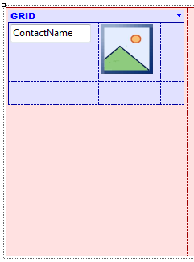
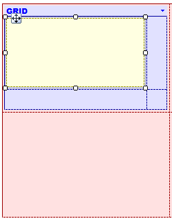
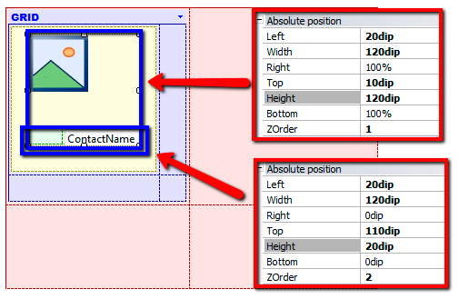

This document explains how to use the Canvas control to show overlay attributes. In this case we will use the canvas within a grid to show an attribute over an image. The example we will use is the Event Day application, and the layout from where we start is as follows:  The first thing we must do is empty the grid table and insert a canvas container. To do that we modify the canvas’ properties so that it takes up 100% of the screen’s width, with a height of 160dips.  Then we move the attributes inside the canvas, placing them and setting, for each of them, their absolute positioning properties.  Note that the table that contains the image is located at 10dips from the upper part -Top = 10- of the canvas and its height is 120dips -ending at 130dips from the upper part. So, the table that contains the name with coordinate Top = 110 and ZOrder = 2 is overlaid on the image. The feature in action See Also
|
| Backlinks | |
| Canvas control | DesignOps - Guide for designers |
| Elevation property | HowTo: Adding Material Design to Android applications |